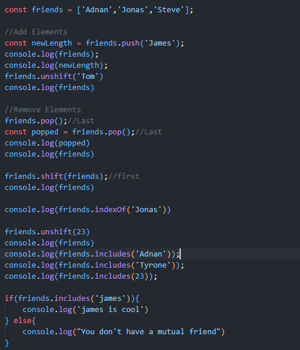
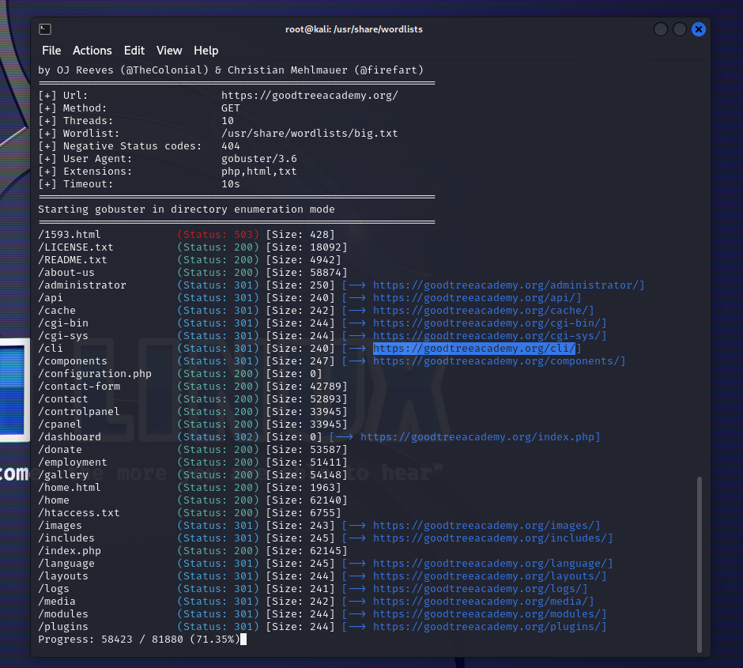

Coding
I know HTML, CSS, and JavaScript

CyberSecurity
I'm quite good in OSINT, social-engineering, using Kali Linux tools and etc.
Here is an example of what I've done

Hustling
I have a lot of discipline and stay focused on what I need to get done. No matter how tough things get, I never quit or walk away from a challenge.
If something doesn’t go my way, I try again until I figure it out. I believe that the only way to reach my goals is by staying on track and working hard every day.
Even when things are boring or frustrating, I push through because I know it’ll be worth it in the end. I don’t waste time waiting for things to happen. I go after what I want.
Whether it’s schoolwork, personal goals, or hobbies, I make sure to put in the effort.
While others might get distracted or quit, I stay focused and keep moving forward. Hard work might take time, but I know if I keep going, I’ll get where I want to be.
- Adnan